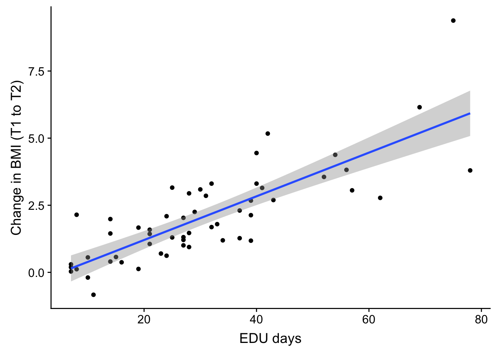
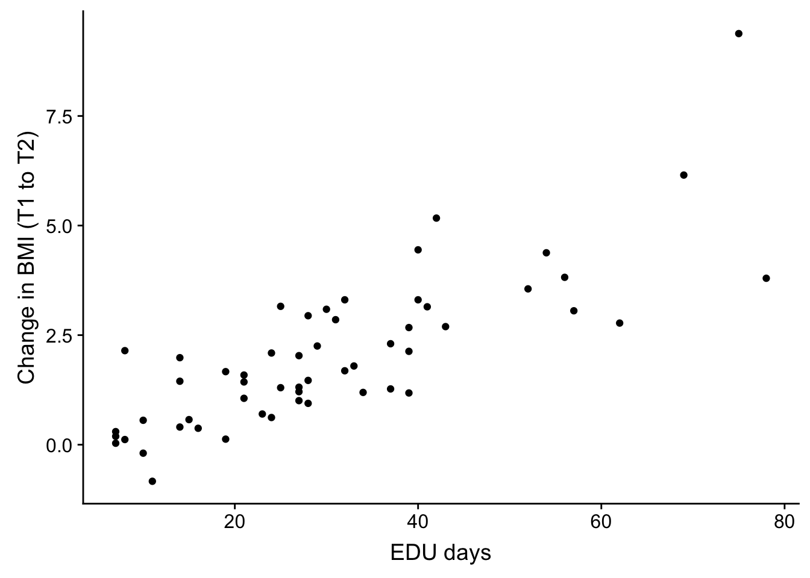
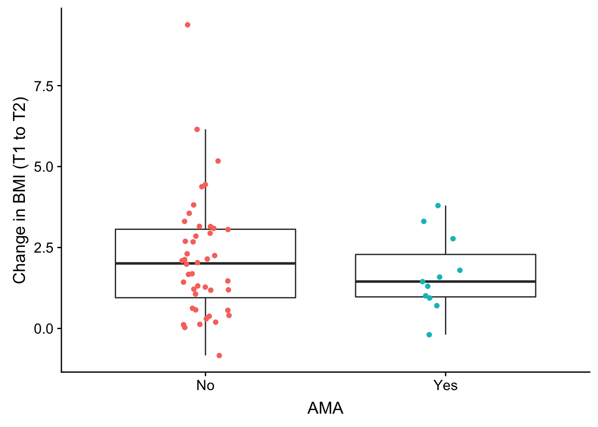
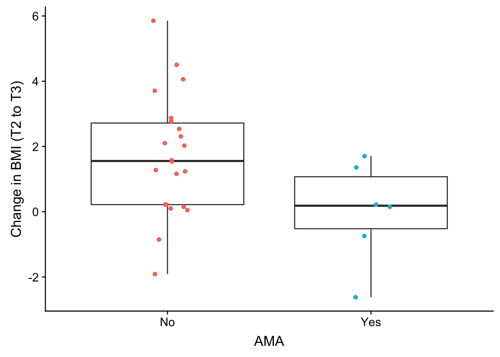
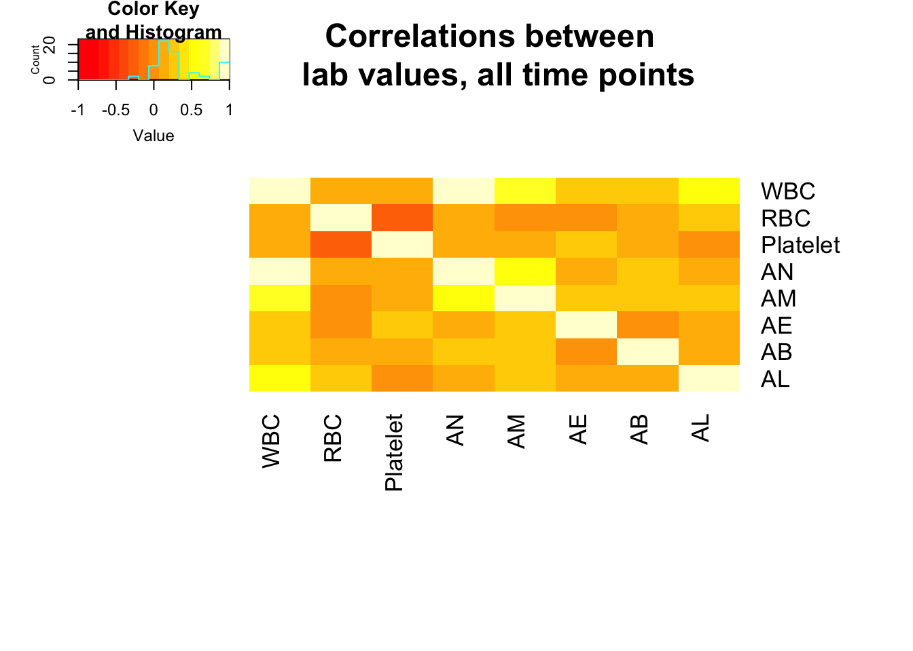
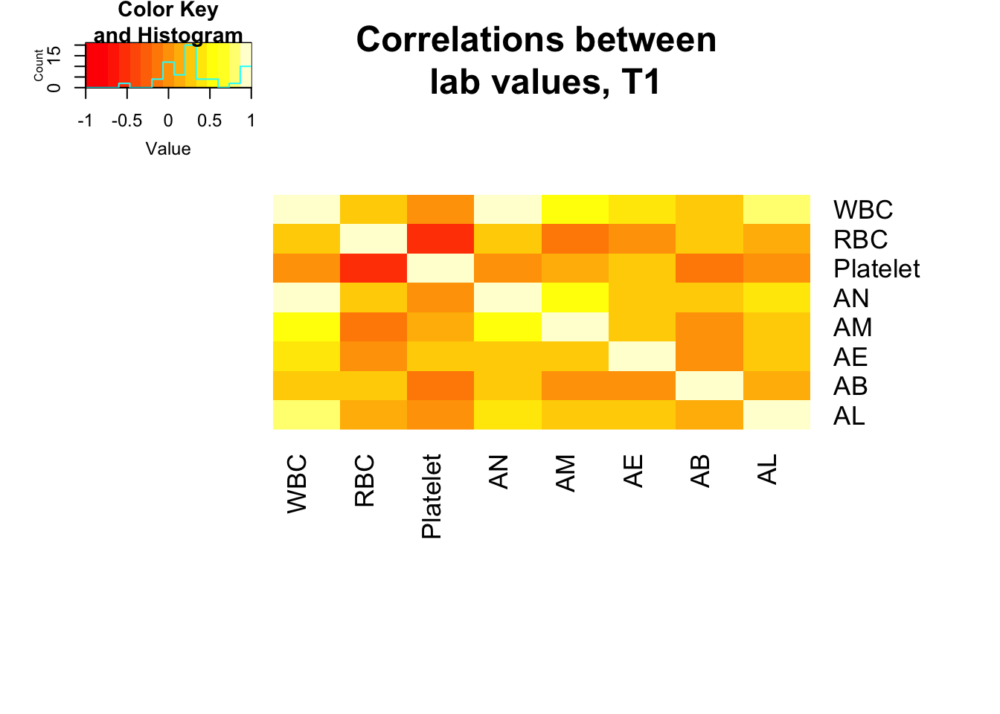

Last updated: 2018-08-28
workflowr checks: (Click a bullet for more information) ✖ R Markdown file: uncommitted changes
The R Markdown is untracked by Git. To know which version of the R Markdown file created these results, you’ll want to first commit it to the Git repo. If you’re still working on the analysis, you can ignore this warning. When you’re finished, you can run wflow_publish to commit the R Markdown file and build the HTML.
✔ Environment: empty
Great job! The global environment was empty. Objects defined in the global environment can affect the analysis in your R Markdown file in unknown ways. For reproduciblity it’s best to always run the code in an empty environment.
✔ Seed:
set.seed(12345)
The command set.seed(12345) was run prior to running the code in the R Markdown file. Setting a seed ensures that any results that rely on randomness, e.g. subsampling or permutations, are reproducible.
✔ Session information: recorded
Great job! Recording the operating system, R version, and package versions is critical for reproducibility.
✔ Repository version: 241c630
wflow_publish or wflow_git_commit). workflowr only checks the R Markdown file, but you know if there are other scripts or data files that it depends on. Below is the status of the Git repository when the results were generated:
Ignored files:
Ignored: .DS_Store
Ignored: analysis/.DS_Store
Ignored: analysis/figure/
Ignored: data/.DS_Store
Ignored: data/aux_info/
Ignored: data/hg_38/
Ignored: data/libParams/
Ignored: output/.DS_Store
Untracked files:
Untracked: _workflowr.yml
Untracked: analysis/Collection_dates.Rmd
Untracked: analysis/Converting_IDs.Rmd
Untracked: analysis/Global_variation.Rmd
Untracked: analysis/Preliminary_clinical_covariate.Rmd
Untracked: analysis/VennDiagram2018-07-24_06-55-46.log
Untracked: analysis/VennDiagram2018-07-24_06-56-13.log
Untracked: analysis/VennDiagram2018-07-24_06-56-50.log
Untracked: analysis/VennDiagram2018-07-24_06-58-41.log
Untracked: analysis/VennDiagram2018-07-24_07-00-07.log
Untracked: analysis/VennDiagram2018-07-24_07-00-42.log
Untracked: analysis/VennDiagram2018-07-24_07-01-08.log
Untracked: analysis/VennDiagram2018-08-17_15-13-24.log
Untracked: analysis/VennDiagram2018-08-17_15-13-30.log
Untracked: analysis/VennDiagram2018-08-17_15-15-06.log
Untracked: analysis/VennDiagram2018-08-17_15-16-01.log
Untracked: analysis/VennDiagram2018-08-17_15-17-51.log
Untracked: analysis/VennDiagram2018-08-17_15-18-42.log
Untracked: analysis/VennDiagram2018-08-17_15-19-21.log
Untracked: analysis/VennDiagram2018-08-20_09-07-57.log
Untracked: analysis/VennDiagram2018-08-20_09-08-37.log
Untracked: analysis/VennDiagram2018-08-26_19-54-03.log
Untracked: analysis/VennDiagram2018-08-26_20-47-08.log
Untracked: analysis/VennDiagram2018-08-26_20-49-49.log
Untracked: analysis/VennDiagram2018-08-27_00-04-36.log
Untracked: analysis/VennDiagram2018-08-27_00-09-27.log
Untracked: analysis/VennDiagram2018-08-27_00-13-57.log
Untracked: analysis/VennDiagram2018-08-27_00-16-32.log
Untracked: analysis/VennDiagram2018-08-27_10-00-25.log
Untracked: analysis/VennDiagram2018-08-28_06-03-13.log
Untracked: analysis/VennDiagram2018-08-28_06-03-14.log
Untracked: analysis/VennDiagram2018-08-28_06-05-50.log
Untracked: analysis/VennDiagram2018-08-28_06-06-58.log
Untracked: analysis/VennDiagram2018-08-28_06-10-12.log
Untracked: analysis/VennDiagram2018-08-28_06-10-13.log
Untracked: analysis/VennDiagram2018-08-28_06-18-29.log
Untracked: analysis/VennDiagram2018-08-28_07-22-26.log
Untracked: analysis/VennDiagram2018-08-28_07-22-27.log
Untracked: analysis/background_dds_david.csv
Untracked: analysis/correlations_bet_covariates.Rmd
Untracked: analysis/correlations_over_time.Rmd
Untracked: analysis/genocode_annotation_info.Rmd
Untracked: analysis/genotypes.Rmd
Untracked: analysis/import_transcript_level_estimates.Rmd
Untracked: analysis/test_dds_david.csv
Untracked: analysis/variables_by_time.Rmd
Untracked: analysis/voom_limma.Rmd
Untracked: analysis/voom_limma_hg37.Rmd
Untracked: analysis/voom_limma_weight_change.Rmd
Untracked: data/BAN2 Dates_T1_T2.xlsx
Untracked: data/BAN_DATES.csv
Untracked: data/BAN_DATES.xlsx
Untracked: data/BAN_DATES_txt.csv
Untracked: data/Ban_geno.csv
Untracked: data/Ban_geno.xlsx
Untracked: data/Blood_dates.txt
Untracked: data/DAVID_background.txt
Untracked: data/DAVID_list_T1T2.txt
Untracked: data/DAVID_list_T1T2_weight.txt
Untracked: data/DAVID_list_T2T3.txt
Untracked: data/DAVID_list_T2T3_weight.txt
Untracked: data/DAVID_results/
Untracked: data/DAVID_top100_list_T1T2.txt
Untracked: data/DAVID_top100_list_T1T2_weight.txt
Untracked: data/DAVID_top100_list_T2T3.txt
Untracked: data/DAVID_top100_list_T2T3_weight.txt
Untracked: data/Eigengenes/
Untracked: data/FemaleWeightRestoration-01-dataInput.RData
Untracked: data/FemaleWeightRestoration-resid-01-dataInput.RData
Untracked: data/FemaleWeightRestoration-resid-T1T2-01-dataInput.RData
Untracked: data/HTSF_IDs.sav
Untracked: data/Homo_sapiens.GRCh38.v22_table.txt
Untracked: data/Labels.csv
Untracked: data/Labels.xlsx
Untracked: data/RIN.xlsx
Untracked: data/RIN_over_time.csv
Untracked: data/RIN_over_time.xlsx
Untracked: data/T0_consolid.csv
Untracked: data/T0_consolid.xlsx
Untracked: data/age_t1.txt
Untracked: data/birthday_age.csv
Untracked: data/birthday_age.xlsx
Untracked: data/clinical_sample_info.csv
Untracked: data/clinical_sample_info_geno.csv
Untracked: data/cmd_info.json
Untracked: data/counts_hg37_gc_txsalmon.RData
Untracked: data/counts_hg38_gc.RData
Untracked: data/counts_hg38_gc_dds.RData
Untracked: data/counts_hg38_gc_txsalmon.RData
Untracked: data/covar_lm.csv
Untracked: data/covar_lm_missing.csv
Untracked: data/eigengenes_T1_T2_cov_adj_exp_5_modules.txt
Untracked: data/eigengenes_T1_T2_module_background.txt
Untracked: data/eigengenes_adj_exp_7_modules.txt
Untracked: data/eigengenes_cov_adj_exp_14_modules.txt
Untracked: data/eigengenes_module_background.txt
Untracked: data/eigengenes_unadj_exp_10_modules.txt
Untracked: data/eigengenes_unadj_exp_6_modules.txt
Untracked: data/eigengenes_unadj_exp_9_modules.txt
Untracked: data/files_list.txt
Untracked: data/final_covariates.csv
Untracked: data/gene_exp_values_2202.txt
Untracked: data/gene_exp_values_2209.txt
Untracked: data/gene_exp_values_2218.txt
Untracked: data/gene_exp_values_2220.txt
Untracked: data/gene_exp_values_2226.txt
Untracked: data/gene_exp_values_2228.txt
Untracked: data/gene_expression_filtered_T1T5.csv
Untracked: data/gene_names_58387.txt
Untracked: data/gene_to_tran.txt
Untracked: data/lm_covar_fixed_random.csv
Untracked: data/lm_covar_fixed_random_geno.csv
Untracked: data/logs/
Untracked: data/module_T1T2_cov_adj_blue.txt
Untracked: data/module_T1T2_cov_adj_brown.txt
Untracked: data/module_T1T2_cov_adj_turquoise.txt
Untracked: data/module_T1T2_cov_adj_yellow.txt
Untracked: data/module_adj_cov_merged_blue.txt
Untracked: data/module_adj_cov_merged_brown.txt
Untracked: data/module_adj_cov_merged_cyan.txt
Untracked: data/module_adj_cov_merged_green.txt
Untracked: data/module_adj_cov_merged_greenyellow.txt
Untracked: data/module_adj_cov_merged_magenta.txt
Untracked: data/module_adj_cov_merged_red.txt
Untracked: data/module_adj_cov_merged_salmon.txt
Untracked: data/module_adj_cov_merged_tan.txt
Untracked: data/module_adj_cov_merged_yellow.txt
Untracked: data/module_black.txt
Untracked: data/module_blue.txt
Untracked: data/module_brown.txt
Untracked: data/module_cov_adj_black.txt
Untracked: data/module_cov_adj_blue.txt
Untracked: data/module_cov_adj_brown.txt
Untracked: data/module_cov_adj_cyan.txt
Untracked: data/module_cov_adj_green.txt
Untracked: data/module_cov_adj_greenyellow.txt
Untracked: data/module_cov_adj_magenta.txt
Untracked: data/module_cov_adj_pink.txt
Untracked: data/module_cov_adj_purple.txt
Untracked: data/module_cov_adj_red.txt
Untracked: data/module_cov_adj_salmon.txt
Untracked: data/module_cov_adj_tan.txt
Untracked: data/module_cov_adj_turquoise.txt
Untracked: data/module_cov_adj_yellow.txt
Untracked: data/module_cyan.txt
Untracked: data/module_green.txt
Untracked: data/module_greenyellow.txt
Untracked: data/module_magenta.txt
Untracked: data/module_merged_black.txt
Untracked: data/module_merged_blue.txt
Untracked: data/module_merged_brown.txt
Untracked: data/module_merged_cyan.txt
Untracked: data/module_merged_green.txt
Untracked: data/module_merged_greenyellow.txt
Untracked: data/module_merged_magenta.txt
Untracked: data/module_merged_pink.txt
Untracked: data/module_merged_purple.txt
Untracked: data/module_merged_red.txt
Untracked: data/module_merged_salmon.txt
Untracked: data/module_merged_tan.txt
Untracked: data/module_merged_turquoise.txt
Untracked: data/module_merged_yellow.txt
Untracked: data/module_pink.txt
Untracked: data/module_purple.txt
Untracked: data/module_red.txt
Untracked: data/module_salmon.txt
Untracked: data/module_tan.txt
Untracked: data/module_turquoise.txt
Untracked: data/module_yellow.txt
Untracked: data/notimecovariates.csv
Untracked: data/only_individuals_biomarkers_weight_restoration_study.xlsx
Untracked: data/pcs_genes.csv
Untracked: data/pcs_genes.txt
Untracked: data/rest1t2_BI_hg37.rds
Untracked: data/rest1t2_BI_hg38.rds
Untracked: data/rest1t2_hg37.rds
Untracked: data/rest1t2_psych_meds_BMI_hg37.rds
Untracked: data/rest1t2_psych_meds_hg37.rds
Untracked: data/rest2t3_BI_hg37.rds
Untracked: data/rest2t3_BI_hg38.rds
Untracked: data/rest2t3_hg37.rds
Untracked: data/rest2t3_psych_meds_BMI_hg37.rds
Untracked: data/rest2t3_psych_meds_hg37.rds
Untracked: data/salmon_gene_matrix_bak_reorder_time.txt
Untracked: data/technical_sample_info.csv
Untracked: data/tx_to_gene.txt
Untracked: data/tx_to_gene_37.txt
Untracked: data/usa2.pcawithref.menv.mds_cov
Untracked: data/vsd_values_hg38_gc.rds
Untracked: data/~$Labels.xlsx
Untracked: data/~$T0_consolid.xlsx
Untracked: docs/VennDiagram2018-07-24_06-55-46.log
Untracked: docs/VennDiagram2018-07-24_06-56-13.log
Untracked: docs/VennDiagram2018-07-24_06-56-50.log
Untracked: docs/VennDiagram2018-07-24_06-58-41.log
Untracked: docs/VennDiagram2018-07-24_07-00-07.log
Untracked: docs/VennDiagram2018-07-24_07-00-42.log
Untracked: docs/VennDiagram2018-07-24_07-01-08.log
Untracked: docs/figure/
Unstaged changes:
Modified: analysis/_site.yml
Modified: analysis/about.Rmd
Deleted: analysis/chunks.R
Modified: analysis/index.Rmd
Modified: analysis/license.Rmd
# Load library for plotting
library(cowplot)Warning: package 'cowplot' was built under R version 3.4.4Loading required package: ggplot2Warning: package 'ggplot2' was built under R version 3.4.4
Attaching package: 'cowplot'The following object is masked from 'package:ggplot2':
ggsavelibrary(ggplot2)
library(gplots)
Attaching package: 'gplots'The following object is masked from 'package:stats':
lowess# Load data
ind_only <- read.csv("../data/clinical_sample_info.csv")
str(ind_only)'data.frame': 156 obs. of 54 variables:
$ From_fastq : Factor w/ 156 levels "22201T1","22201T2",..: 1 2 3 4 5 6 7 8 9 10 ...
$ BAN_ID : int 2201 2201 2201 2202 2202 2202 2203 2203 2204 2204 ...
$ Time : int 1 2 3 1 2 3 1 2 1 2 ...
$ age : int 15 15 15 33 33 33 22 22 25 24 ...
$ psychmeds : int 1 1 1 0 1 1 0 0 0 0 ...
$ bmi : num 15.4 15.8 19.4 16.1 17.3 ...
$ time : int 1 2 3 1 2 3 1 2 1 2 ...
$ current_ED : int 1 1 1 1 1 1 1 1 1 1 ...
$ Time_from_admission: int 5 12 142 1 24 139 1 8 5 69 ...
$ Weight : num 93.9 96.3 118.4 103 110.5 ...
$ Change_weight : num 0 2.4 22.1 0 7.54 14.4 0 12.4 0 36.1 ...
$ WBC : num 6.2 5.9 5.9 4.8 4.7 4.2 7.2 5.3 6.5 7.1 ...
$ RBC : num 4.28 4.28 4.36 4.27 4.19 4.37 4.39 3.97 3.91 4.07 ...
$ HGB : num 13.3 13.2 13.2 13.5 13.5 13.3 14 12.7 13.7 14.6 ...
$ HCT : num 38.4 37.4 38 39.5 39.3 39.2 39.8 36.7 39.6 44.3 ...
$ MCV : int 90 87 87 93 94 90 91 93 101 109 ...
$ MCH : int 31 31 30 32 32 31 32 32 35 36 ...
$ MCHC : int 35 35 35 34 34 34 35 35 35 33 ...
$ RDW : num 13.8 13.3 12.5 12.9 13.2 12.7 13.1 13.4 13.5 12.8 ...
$ MPV : num 7.7 8.3 8.8 7.4 6.5 9.4 7.7 7.9 6.8 6.9 ...
$ Platelet : int 197 226 258 272 270 266 233 211 229 267 ...
$ AN : num 3.6 3.3 3.9 3.2 2.7 2.1 3.9 2.2 4.6 4.6 ...
$ AM : num 0.4 0.3 0.4 0.3 0.3 0.3 0.2 0.2 0.4 0.5 ...
$ AE : num 0.1 0.2 0.1 0.1 0.1 0.1 0.1 0.1 0 0.5 ...
$ AB : num 0 0 0 0.1 0 0 0.1 0.1 0 0.1 ...
$ LUC : int 2 2 2 2 3 2 2 5 1 2 ...
$ NA. : int 139 144 142 137 140 137 137 142 142 143 ...
$ K : num 4.1 4.6 4.6 4.6 4.1 4.1 3.9 4.2 3.2 4.8 ...
$ CL : int 102 102 105 99 101 99 NA 103 104 102 ...
$ BUN : int 12 15 11 15 16 14 16 12 27 25 ...
$ CR : num 0.63 0.7 0.65 0.72 0.72 0.74 0.85 0.81 0.71 0.56 ...
$ Anion : int 9 15 11 7 10 12 NA 8 7 13 ...
$ BUN.1 : num 19 21 17 21 22 19 19 15 38 45 ...
$ GLU : int 80 84 83 69 79 76 76 75 49 76 ...
$ CA : num 9.8 9.7 9.9 9.5 9.3 9 8.9 8.8 8.6 9.6 ...
$ MG : num 1.8 1.9 1.8 2.1 2 1.9 2.1 2.1 2.2 2 ...
$ PHOS : num 4.7 5 4.3 4.6 4.8 4.4 4.4 4.4 1.8 4.9 ...
$ TP : num 8.1 8.2 7.6 6.2 6.9 7.2 6.6 5.8 6.8 7.1 ...
$ ALB : num NA NA 4.5 NA 3.7 3.9 3.8 3.1 3.8 4.5 ...
$ URAC : num 3.1 4.3 3.6 3.1 3.4 2.9 5.7 3 4.3 3.9 ...
$ LD : int 377 388 433 333 402 425 335 298 632 847 ...
$ AST : int NA 23 19 28 24 26 27 27 124 43 ...
$ ALT : int NA 37 22 36 36 25 58 57 337 90 ...
$ ALP : int NA 72 83 22 27 33 31 28 55 79 ...
$ CK : Factor w/ 66 levels "","<20.0","101",..: 52 54 59 21 33 65 19 17 30 21 ...
$ PT : num 11.6 10.9 11.4 11.6 10.1 10.9 11.4 10.7 12.9 10.5 ...
$ ESR : int NA NA 5 NA 5 5 NA 5 1 1 ...
$ Height : num 65.5 65.5 65.5 67 NA NA 64.5 NA 65 NA ...
$ Race : int 2 2 2 2 2 2 2 2 2 2 ...
$ Ethnicity : int 2 2 2 2 2 2 2 2 2 2 ...
$ AL : num 1.9 2 1.4 1 1.5 1.6 2.7 2.5 1.4 1.2 ...
$ CO2 : Factor w/ 16 levels "",">40","19",..: 10 9 8 13 11 8 11 13 13 10 ...
$ MDRD : Factor w/ 8 levels "",">=60",">60",..: 8 7 8 2 2 2 2 2 2 2 ...
$ bilirubin : Factor w/ 17 levels "","<0.1","0",..: 7 7 9 9 7 7 13 7 12 6 ...dim(ind_only)[1] 156 54summary(ind_only) From_fastq BAN_ID Time age
22201T1: 1 Min. :2201 Min. :1.000 Min. :15.00
22201T2: 1 1st Qu.:2216 1st Qu.:1.000 1st Qu.:20.00
22201T3: 1 Median :2233 Median :2.000 Median :24.00
22202T1: 1 Mean :2235 Mean :2.058 Mean :26.16
22202T2: 1 3rd Qu.:2254 3rd Qu.:3.000 3rd Qu.:33.00
22202T3: 1 Max. :2274 Max. :5.000 Max. :52.00
(Other):150 NA's :7
psychmeds bmi time current_ED
Min. :0.0000 Min. :10.68 Min. :1.000 Min. :0.0000
1st Qu.:0.0000 1st Qu.:15.56 1st Qu.:1.000 1st Qu.:1.0000
Median :1.0000 Median :16.97 Median :2.000 Median :1.0000
Mean :0.6667 Mean :16.73 Mean :2.058 Mean :0.9551
3rd Qu.:1.0000 3rd Qu.:17.98 3rd Qu.:3.000 3rd Qu.:1.0000
Max. :1.0000 Max. :23.32 Max. :5.000 Max. :1.0000
Time_from_admission Weight Change_weight WBC
Min. : 1.00 Min. : 54.70 Min. :-14.500 Min. : 2.400
1st Qu.: 4.00 1st Qu.: 92.95 1st Qu.: 0.000 1st Qu.: 4.200
Median : 24.50 Median :100.73 Median : 0.900 Median : 5.300
Mean : 94.65 Mean :100.67 Mean : 5.714 Mean : 5.468
3rd Qu.:118.00 3rd Qu.:109.19 3rd Qu.: 10.180 3rd Qu.: 6.500
Max. :947.00 Max. :148.90 Max. : 46.900 Max. :11.000
NA's :33
RBC HGB HCT MCV
Min. :2.810 Min. : 9.20 Min. :27.90 Min. : 70.00
1st Qu.:3.865 1st Qu.:11.70 1st Qu.:35.85 1st Qu.: 89.00
Median :4.190 Median :12.70 Median :38.10 Median : 91.00
Mean :4.149 Mean :12.63 Mean :37.86 Mean : 91.68
3rd Qu.:4.430 3rd Qu.:13.70 3rd Qu.:40.75 3rd Qu.: 95.00
Max. :5.450 Max. :16.00 Max. :46.10 Max. :109.00
NA's :33 NA's :33 NA's :33 NA's :33
MCH MCHC RDW MPV
Min. :22.00 Min. :30.00 Min. :11.90 Min. : 6.300
1st Qu.:30.00 1st Qu.:33.00 1st Qu.:12.80 1st Qu.: 7.400
Median :31.00 Median :33.00 Median :13.40 Median : 7.800
Mean :30.63 Mean :33.35 Mean :13.67 Mean : 8.042
3rd Qu.:32.00 3rd Qu.:34.00 3rd Qu.:14.25 3rd Qu.: 8.600
Max. :36.00 Max. :36.00 Max. :18.40 Max. :10.800
NA's :33 NA's :33 NA's :33 NA's :33
Platelet AN AM AE
Min. :128.0 Min. :0.800 Min. :0.1000 Min. :0.0000
1st Qu.:195.0 1st Qu.:2.100 1st Qu.:0.2000 1st Qu.:0.1000
Median :238.0 Median :2.800 Median :0.3000 Median :0.1000
Mean :253.0 Mean :3.007 Mean :0.3287 Mean :0.1744
3rd Qu.:298.5 3rd Qu.:3.600 3rd Qu.:0.4000 3rd Qu.:0.2000
Max. :527.0 Max. :7.800 Max. :0.7000 Max. :2.9000
NA's :33 NA's :34 NA's :34 NA's :35
AB LUC NA. K
Min. :0.00000 Min. :1.000 Min. :134.0 Min. :3.100
1st Qu.:0.00000 1st Qu.:2.000 1st Qu.:138.0 1st Qu.:4.100
Median :0.00000 Median :3.000 Median :140.0 Median :4.300
Mean :0.02314 Mean :2.628 Mean :139.8 Mean :4.336
3rd Qu.:0.00000 3rd Qu.:3.000 3rd Qu.:142.0 3rd Qu.:4.600
Max. :0.10000 Max. :6.000 Max. :147.0 Max. :6.100
NA's :35 NA's :35 NA's :22 NA's :22
CL BUN CR Anion
Min. : 84.0 Min. : 4.00 Min. :0.4400 Min. : 4.000
1st Qu.:100.2 1st Qu.:12.00 1st Qu.:0.6200 1st Qu.: 8.000
Median :102.0 Median :15.00 Median :0.7000 Median :10.000
Mean :102.1 Mean :15.22 Mean :0.7201 Mean : 9.913
3rd Qu.:104.0 3rd Qu.:19.00 3rd Qu.:0.8100 3rd Qu.:12.000
Max. :113.0 Max. :36.00 Max. :1.1500 Max. :20.000
NA's :26 NA's :23 NA's :23 NA's :29
BUN.1 GLU CA MG
Min. : 5.00 Min. :49.00 Min. : 8.300 Min. :1.400
1st Qu.:16.00 1st Qu.:76.00 1st Qu.: 9.125 1st Qu.:1.875
Median :21.00 Median :81.00 Median : 9.400 Median :1.950
Mean :22.07 Mean :80.19 Mean : 9.416 Mean :1.955
3rd Qu.:26.00 3rd Qu.:85.00 3rd Qu.: 9.700 3rd Qu.:2.100
Max. :82.00 Max. :98.00 Max. :10.400 Max. :2.700
NA's :24 NA's :25 NA's :22 NA's :24
PHOS TP ALB URAC
Min. :1.800 Min. :4.800 Min. :2.10 Min. :1.200
1st Qu.:4.000 1st Qu.:6.300 1st Qu.:3.80 1st Qu.:2.875
Median :4.300 Median :6.900 Median :4.10 Median :3.400
Mean :4.327 Mean :6.895 Mean :4.09 Mean :3.428
3rd Qu.:4.700 3rd Qu.:7.400 3rd Qu.:4.50 3rd Qu.:3.900
Max. :6.200 Max. :9.400 Max. :5.60 Max. :8.900
NA's :25 NA's :28 NA's :31 NA's :24
LD AST ALT ALP
Min. : 250.0 Min. : 13.00 Min. : 12.00 Min. : 22.00
1st Qu.: 371.2 1st Qu.: 22.00 1st Qu.: 23.00 1st Qu.: 43.00
Median : 425.5 Median : 27.00 Median : 33.00 Median : 58.00
Mean : 452.5 Mean : 37.82 Mean : 54.07 Mean : 59.02
3rd Qu.: 500.0 3rd Qu.: 38.50 3rd Qu.: 51.00 3rd Qu.: 68.00
Max. :1504.0 Max. :152.00 Max. :338.00 Max. :166.00
NA's :26 NA's :25 NA's :25 NA's :27
CK PT ESR Height
: 28 Min. : 9.20 Min. : 1.000 Min. :60.00
34 : 6 1st Qu.:10.50 1st Qu.: 4.000 1st Qu.:63.00
41 : 6 Median :11.20 Median : 6.000 Median :64.45
23 : 4 Mean :11.19 Mean : 7.975 Mean :64.90
28 : 4 3rd Qu.:11.80 3rd Qu.:10.000 3rd Qu.:65.98
29 : 4 Max. :14.30 Max. :49.000 Max. :72.00
(Other):104 NA's :26 NA's :35 NA's :72
Race Ethnicity AL CO2 MDRD
Min. :2.000 Min. :1.000 Min. :0.600 :22 >=60 :97
1st Qu.:2.000 1st Qu.:2.000 1st Qu.:1.400 28 :22 :34
Median :2.000 Median :2.000 Median :1.750 27 :19 >60 :11
Mean :2.115 Mean :1.962 Mean :1.796 26 :17 N/A : 9
3rd Qu.:2.000 3rd Qu.:2.000 3rd Qu.:2.200 29 :17 57 : 2
Max. :5.000 Max. :2.000 Max. :3.400 31 :14 53.34 : 1
NA's :34 (Other):45 (Other): 2
bilirubin
0.4 :32
:28
0.3 :24
0.5 :20
0.6 :16
0.2 :14
(Other):22 # T1
ind_only_t1 <- ind_only[which(ind_only$Time == 1),]
dim(ind_only_t1)[1] 55 54#T2
ind_only_t2 <- ind_only[which(ind_only$Time == 2),]
dim(ind_only_t2)[1] 55 54#T3
ind_only_t3 <- ind_only[which(ind_only$Time == 3),]
dim(ind_only_t3)[1] 34 54summary(as.factor(ind_only_t3$current_ED)) 0 1
1 33 #T4
ind_only_t4 <- ind_only[which(ind_only$Time == 4),]
dim(ind_only_t4)[1] 6 54summary(as.factor(ind_only_t4$current_ED))0 1
3 3 #T5
ind_only_t5 <- ind_only[which(ind_only$Time == 5),]
dim(ind_only_t5)[1] 6 54summary(as.factor(ind_only_t5$current_ED))0 1
3 3 summary(as.factor(ind_only_t1$Race)) 2 3 5
52 1 2 summary(as.factor(ind_only_t1$Ethnicity)) 1 2
2 53 no_time <- read.csv("../data/notimecovariates.csv")
str(no_time)'data.frame': 55 obs. of 14 variables:
$ Subject_ID : int 2201 397 2203 2204 2205 2206 2207 2208 399 2210 ...
$ age : int 15 33 22 25 20 22 25 18 28 25 ...
$ age_onset : int 14 18 18 24 17 18 11 18 16 16 ...
$ EDU_days : int 14 27 8 69 54 24 42 14 25 32 ...
$ AMA : int 0 0 0 0 0 0 0 0 0 0 ...
$ BAN_ID : int 2201 2202 2203 2204 2205 2206 2207 2208 2209 2210 ...
$ RRED_ID : int NA 397 NA NA NA NA NA NA 399 NA ...
$ AN_subtype : int 2 2 1 2 2 1 2 2 1 2 ...
$ bmiT1T2 : num 0.403 1.209 2.146 6.152 4.379 ...
$ bmiT2T3 : num 3.71 2.31 NA NA NA ...
$ bmiT3T4 : num NA 0.328 NA NA NA ...
$ bmiT4T5 : num NA -1.14 NA NA NA ...
$ Previous_hospitalizations: int 0 0 0 0 1 3 6 0 2 6 ...
$ blooddrawT1T2 : int 7 23 7 64 50 30 41 17 24 31 ...# Age of onset
summary(no_time$age_onset) Min. 1st Qu. Median Mean 3rd Qu. Max. NA's
9.00 13.25 16.00 16.35 18.00 41.00 1 mean(no_time$age_onset[-47])[1] 16.35185sd(no_time$age_onset[-47])[1] 5.143809# Age
summary(ind_only_t1$age) Min. 1st Qu. Median Mean 3rd Qu. Max.
15.0 18.5 23.0 25.2 29.5 50.0 mean(ind_only_t1$age)[1] 25.2sd(ind_only_t1$age)[1] 8.3142# Prior hospitalizations
prev_hosp <- no_time[which(no_time$Previous_hospitalizations != "NA"),]
summary(prev_hosp$Previous_hospitalizations) Min. 1st Qu. Median Mean 3rd Qu. Max.
0.000 0.000 0.000 1.453 1.000 13.000 mean(prev_hosp$Previous_hospitalizations)[1] 1.45283sd(prev_hosp$Previous_hospitalizations)[1] 2.84582# Subtype
summary(as.factor(no_time$AN_subtype)) 1 2 3
19 35 1 # Weight
summary(ind_only_t1$Weight) Min. 1st Qu. Median Mean 3rd Qu. Max.
54.70 85.85 92.80 90.71 98.00 121.30 mean(ind_only_t1$Weight)[1] 90.70764sd(ind_only_t1$Weight)[1] 13.06233# BMI
summary(ind_only_t1$bmi) Min. 1st Qu. Median Mean 3rd Qu. Max.
10.68 13.94 15.56 15.07 16.40 18.19 mean(ind_only_t1$bmi)[1] 15.06578sd(ind_only_t1$bmi)[1] 1.829126# EDU
summary(no_time$EDU_days) Min. 1st Qu. Median Mean 3rd Qu. Max.
7.00 19.00 28.00 30.47 39.00 78.00 mean(no_time$EDU_days)[1] 30.47273sd(no_time$EDU_days)[1] 17.18403# AMA
summary(as.factor(no_time$AMA)) 0 1
44 11 # AMA versus EDU days
summary(lm(no_time$EDU_days ~ as.factor(no_time$AMA)))
Call:
lm(formula = no_time$EDU_days ~ as.factor(no_time$AMA))
Residuals:
Min 1Q Median 3Q Max
-22.886 -11.352 -2.886 9.114 45.182
Coefficients:
Estimate Std. Error t value Pr(>|t|)
(Intercept) 29.886 2.609 11.456 5.87e-16 ***
as.factor(no_time$AMA)1 2.932 5.833 0.503 0.617
---
Signif. codes: 0 '***' 0.001 '**' 0.01 '*' 0.05 '.' 0.1 ' ' 1
Residual standard error: 17.3 on 53 degrees of freedom
Multiple R-squared: 0.004744, Adjusted R-squared: -0.01403
F-statistic: 0.2526 on 1 and 53 DF, p-value: 0.6173# Weight over time
summary(ind_only_t1$Weight) Min. 1st Qu. Median Mean 3rd Qu. Max.
54.70 85.85 92.80 90.71 98.00 121.30 summary(ind_only_t2$Weight) Min. 1st Qu. Median Mean 3rd Qu. Max.
71.4 96.9 103.0 102.7 110.5 125.2 summary(ind_only_t3$Weight) Min. 1st Qu. Median Mean 3rd Qu. Max.
71.5 102.3 106.5 108.7 116.6 148.9 summary(ind_only_t4$Weight) Min. 1st Qu. Median Mean 3rd Qu. Max.
105.8 107.2 113.7 115.1 123.2 126.0 summary(ind_only_t5$Weight) Min. 1st Qu. Median Mean 3rd Qu. Max.
96.56 105.05 118.28 112.98 119.68 124.00 #T1 to T2
summary(no_time$bmiT1T2) Min. 1st Qu. Median Mean 3rd Qu. Max.
-0.8345 0.9744 1.6867 2.0576 2.9992 9.3800 mean(no_time$bmiT1T2)[1] 2.057576sd(no_time$bmiT1T2)[1] 1.745317#T2 to T3
time <- no_time[which(no_time$bmiT2T3 != "NA"),]
summary(time$bmiT2T3) Min. 1st Qu. Median Mean 3rd Qu. Max.
-2.6221 0.1497 1.3162 1.3419 2.3665 5.8543 mean(time$bmiT2T3)[1] 1.341916sd(time$bmiT2T3)[1] 1.892825#T3 to T4
time <- no_time[which(no_time$bmiT3T4 != "NA"),]
summary(time$bmiT3T4) Min. 1st Qu. Median Mean 3rd Qu. Max.
-1.1094 -0.5715 -0.2267 0.4040 0.2137 4.3126 mean(time$bmiT3T4)[1] 0.4039777sd(time$bmiT3T4)[1] 1.975223#T4 to T5
time <- no_time[which(no_time$bmiT4T5 != "NA"),]
summary(time$bmiT4T5) Min. 1st Qu. Median Mean 3rd Qu. Max.
-1.90129 -1.04090 -0.52475 -0.42010 -0.03467 1.51446 mean(time$bmiT4T5)[1] -0.4200968sd(time$bmiT4T5)[1] 1.166043cor(no_time$EDU_days, no_time$blooddrawT1T2)[1] 0.9555505cor(no_time$EDU_days, no_time$bmiT1T2)[1] 0.8013206cor(no_time$blooddrawT1T2, no_time$bmiT1T2)[1] 0.8116161weight_over_time <- ggplot(no_time, aes(no_time$EDU_days, no_time$bmiT1T2)) + geom_point() + geom_smooth(method='lm',formula=y~x) + theme(legend.position = "none") + xlab("EDU days") + ylab("Change in BMI (T1 to T2)")
plot_grid(weight_over_time)
#save_plot("/Users/laurenblake/Dropbox/Lauren Blake/Figures/EDU_over_BMI_boxplot.png", weight_over_time,
# base_aspect_ratio = 1)
weight_over_time <- ggplot(no_time, aes(no_time$EDU_days, no_time$bmiT1T2)) + geom_point() + theme(legend.position = "none") + xlab("EDU days") + ylab("Change in BMI (T1 to T2)")
plot_grid(weight_over_time)
#save_plot("/Users/laurenblake/Dropbox/Lauren Blake/Figures/EDU_over_BMI_boxplot_no_line.png", weight_over_time,
# base_aspect_ratio = 1)
# AMA status
weight_over_time <- ggplot(no_time, aes(as.factor(no_time$AMA), no_time$bmiT1T2)) + geom_boxplot(outlier.shape = NA) + geom_jitter(aes(color = as.factor(no_time$AMA)), width = 0.1) + xlab("AMA") + ylab("Change in BMI (T1 to T2)") + theme(legend.position = "none") + scale_x_discrete(breaks=c("0","1"),
labels=c("No", "Yes"))
plot_grid(weight_over_time)
#save_plot("/Users/laurenblake/Dropbox/Lauren Blake/Figures/AMA_BMI_T1T2boxplot.png", weight_over_time,
# base_aspect_ratio = 1)
summary(lm(no_time$bmiT1T2 ~ as.factor(no_time$AMA)))
Call:
lm(formula = no_time$bmiT1T2 ~ as.factor(no_time$AMA))
Residuals:
Min 1Q Median 3Q Max
-2.9867 -0.9752 -0.1668 0.9206 7.2278
Coefficients:
Estimate Std. Error t value Pr(>|t|)
(Intercept) 2.1522 0.2640 8.153 6.39e-11 ***
as.factor(no_time$AMA)1 -0.4733 0.5903 -0.802 0.426
---
Signif. codes: 0 '***' 0.001 '**' 0.01 '*' 0.05 '.' 0.1 ' ' 1
Residual standard error: 1.751 on 53 degrees of freedom
Multiple R-squared: 0.01198, Adjusted R-squared: -0.006657
F-statistic: 0.6429 on 1 and 53 DF, p-value: 0.4263weight_over_time <- ggplot(no_time, aes(as.factor(no_time$AMA), no_time$bmiT2T3)) + geom_boxplot(outlier.shape = NA) + geom_jitter(aes(color = as.factor(no_time$AMA)), width = 0.1) + xlab("AMA") + ylab("Change in BMI (T2 to T3)") + theme(legend.position = "none") + scale_x_discrete(breaks=c("0","1"),
labels=c("No", "Yes"))
plot_grid(weight_over_time)Warning: Removed 27 rows containing non-finite values (stat_boxplot).Warning: Removed 27 rows containing missing values (geom_point).
#save_plot("/Users/laurenblake/Dropbox/Lauren Blake/Figures/AMA_BMI_T2T3boxplot.png", weight_over_time,
# base_aspect_ratio = 1)
summary(lm(no_time$bmiT2T3 ~ as.factor(no_time$AMA)))
Call:
lm(formula = no_time$bmiT2T3 ~ as.factor(no_time$AMA))
Residuals:
Min 1Q Median 3Q Max
-3.6153 -1.4847 0.0038 1.0972 4.1493
Coefficients:
Estimate Std. Error t value Pr(>|t|)
(Intercept) 1.7050 0.3814 4.470 0.000136 ***
as.factor(no_time$AMA)1 -1.6943 0.8239 -2.056 0.049912 *
---
Signif. codes: 0 '***' 0.001 '**' 0.01 '*' 0.05 '.' 0.1 ' ' 1
Residual standard error: 1.789 on 26 degrees of freedom
(27 observations deleted due to missingness)
Multiple R-squared: 0.1399, Adjusted R-squared: 0.1068
F-statistic: 4.229 on 1 and 26 DF, p-value: 0.04991ind_only_values <- c(12, 13, 21, 22, 23, 24, 25, 51)
ind_only_labs <- ind_only[,ind_only_values]
ind_only_labs <- as.data.frame(ind_only_labs)
# All labs together
# Platelet
cor(ind_only_labs$Platelet, ind_only_labs$RBC, use = "pairwise.complete.obs")[1] -0.2138213cor(ind_only_labs$Platelet, ind_only_labs$AN, use = "pairwise.complete.obs")[1] 0.1256834cor(ind_only_labs$Platelet, ind_only_labs$AL, use = "pairwise.complete.obs")[1] 0.0005714077cor(ind_only_labs$Platelet, ind_only_labs$AE, use = "pairwise.complete.obs")[1] 0.2574491 # RBC
cor(ind_only_labs$RBC, ind_only_labs$AN, use = "pairwise.complete.obs")[1] 0.1212671cor(ind_only_labs$RBC, ind_only_labs$AL, use = "pairwise.complete.obs")[1] 0.226946cor(ind_only_labs$RBC, ind_only_labs$AE, use = "pairwise.complete.obs")[1] 0.01716806 # AN
cor(ind_only_labs$AN, ind_only_labs$AL, use = "pairwise.complete.obs")[1] 0.1493142cor(ind_only_labs$AN, ind_only_labs$AE, use = "pairwise.complete.obs")[1] 0.1018048 # AL
cor(ind_only_labs$AL, ind_only_labs$AE, use = "pairwise.complete.obs")[1] 0.07208384check_cor_labs <- ind_only_labs
pvalues <- matrix(data = NA, nrow = ncol(check_cor_labs), ncol = ncol(check_cor_labs))
colnames(pvalues) <- colnames(check_cor_labs)
rownames(pvalues) <- colnames(check_cor_labs)
correlations <- matrix(data = NA, nrow = ncol(check_cor_labs), ncol = ncol(check_cor_labs))
colnames(correlations) <- colnames(check_cor_labs)
rownames(correlations) <- colnames(check_cor_labs)
j=1
for (j in 1:ncol(check_cor_labs)){
for (i in 1:ncol(check_cor_labs)){
test <- cor.test(as.numeric(check_cor_labs[,j]), as.numeric(check_cor_labs[,i]), method = "pearson")
#Get the correlation
test$estimate
#Get the p-value
test$p.value
pvalues[j, i] <- test$p.value
correlations[j, i] <- test$estimate
i = i+1
}
j=j+1
}
#correlations
#pvalues
#Find which variables are p-value < 0.05
pvalues <=0.05 WBC RBC Platelet AN AM AE AB AL
WBC TRUE TRUE FALSE TRUE TRUE TRUE TRUE TRUE
RBC TRUE TRUE TRUE FALSE FALSE FALSE TRUE TRUE
Platelet FALSE TRUE TRUE FALSE FALSE TRUE FALSE FALSE
AN TRUE FALSE FALSE TRUE TRUE FALSE TRUE FALSE
AM TRUE FALSE FALSE TRUE TRUE TRUE TRUE TRUE
AE TRUE FALSE TRUE FALSE TRUE TRUE FALSE FALSE
AB TRUE TRUE FALSE TRUE TRUE FALSE TRUE FALSE
AL TRUE TRUE FALSE FALSE TRUE FALSE FALSE TRUE#Find which correlations are <
which(abs(correlations) > 0.5) [1] 1 4 5 8 10 19 25 28 29 33 36 37 46 55 57 64# need data as matrix
mm <- as.matrix(correlations, ncol = ncol(correlations))
#png("/Users/laurenblake/Dropbox/Lauren Blake/Figures/5_values_all_times.png",
# width = 5*300, # 5 x 300 pixels
# height = 5*300,
# res = 300, # 300 pixels per inch
# pointsize = 8)
heatmap.2(x = mm, Rowv = FALSE, Colv = FALSE, dendrogram = "none", main = "Correlations between \n lab values, all time points", notecex = 2, trace = "none", key = TRUE, margins = c(12,8))
dev.off()null device
1 # Time point 1
ind_only_values <- c(2,3,12, 13, 21, 22, 23, 24, 25, 51)
ind_only_labs <- ind_only[,ind_only_values]
check_cor_labs <- ind_only_labs[which(ind_only_labs$Time == 1), -1]
check_cor_labs <- check_cor_labs[,-1]
pvalues <- matrix(data = NA, nrow = ncol(check_cor_labs), ncol = ncol(check_cor_labs))
colnames(pvalues) <- colnames(check_cor_labs)
rownames(pvalues) <- colnames(check_cor_labs)
correlations <- matrix(data = NA, nrow = ncol(check_cor_labs), ncol = ncol(check_cor_labs))
colnames(correlations) <- colnames(check_cor_labs)
rownames(correlations) <- colnames(check_cor_labs)
j=1
for (j in 1:ncol(check_cor_labs)){
for (i in 1:ncol(check_cor_labs)){
test <- cor.test(as.numeric(check_cor_labs[,j]), as.numeric(check_cor_labs[,i]), method = "pearson")
#Get the correlation
test$estimate
#Get the p-value
test$p.value
pvalues[j, i] <- test$p.value
correlations[j, i] <- test$estimate
i = i+1
}
j=j+1
}
#correlations
#pvalues
#Find which variables are p-value < 0.05
pvalues <=0.05 WBC RBC Platelet AN AM AE AB AL
WBC TRUE FALSE FALSE TRUE TRUE TRUE FALSE TRUE
RBC FALSE TRUE TRUE FALSE FALSE FALSE TRUE FALSE
Platelet FALSE TRUE TRUE FALSE FALSE TRUE FALSE FALSE
AN TRUE FALSE FALSE TRUE TRUE TRUE FALSE TRUE
AM TRUE FALSE FALSE TRUE TRUE FALSE FALSE TRUE
AE TRUE FALSE TRUE TRUE FALSE TRUE FALSE FALSE
AB FALSE TRUE FALSE FALSE FALSE FALSE TRUE FALSE
AL TRUE FALSE FALSE TRUE TRUE FALSE FALSE TRUE# need data as matrix
mm <- as.matrix(correlations, ncol = ncol(correlations))
#png("/Users/laurenblake/Dropbox/Lauren Blake/Figures/5_values_T1.png",
# width = 5*300, # 5 x 300 pixels
# height = 5*300,
# res = 300, # 300 pixels per inch
# pointsize = 8)
heatmap.2(x = mm, Rowv = FALSE, Colv = FALSE, dendrogram = "none", main = "Correlations between \n lab values, T1", notecex = 2, trace = "none", key = TRUE, margins = c(12,8))
dev.off()null device
1 # Time point 2
ind_only_values <- c(2, 3, 12, 13, 21, 22, 23, 24, 25, 51)
ind_only_labs <- ind_only[,ind_only_values]
check_cor_labs <- ind_only_labs[which(ind_only_labs$Time == 2), -1]
check_cor_labs <- check_cor_labs[,-1]
pvalues <- matrix(data = NA, nrow = ncol(check_cor_labs), ncol = ncol(check_cor_labs))
colnames(pvalues) <- colnames(check_cor_labs)
rownames(pvalues) <- colnames(check_cor_labs)
correlations <- matrix(data = NA, nrow = ncol(check_cor_labs), ncol = ncol(check_cor_labs))
colnames(correlations) <- colnames(check_cor_labs)
rownames(correlations) <- colnames(check_cor_labs)
j=1
for (j in 1:ncol(check_cor_labs)){
for (i in 1:ncol(check_cor_labs)){
test <- cor.test(as.numeric(check_cor_labs[,j]), as.numeric(check_cor_labs[,i]), method = "pearson")
#Get the correlation
test$estimate
#Get the p-value
test$p.value
pvalues[j, i] <- test$p.value
correlations[j, i] <- test$estimate
i = i+1
}
j=j+1
}
#correlations
#pvalues
#Find which variables are p-value < 0.05
pvalues <=0.05 WBC RBC Platelet AN AM AE AB AL
WBC TRUE FALSE FALSE TRUE TRUE TRUE TRUE TRUE
RBC FALSE TRUE FALSE FALSE FALSE FALSE FALSE TRUE
Platelet FALSE FALSE TRUE FALSE FALSE TRUE FALSE FALSE
AN TRUE FALSE FALSE TRUE TRUE FALSE TRUE FALSE
AM TRUE FALSE FALSE TRUE TRUE FALSE FALSE FALSE
AE TRUE FALSE TRUE FALSE FALSE TRUE FALSE FALSE
AB TRUE FALSE FALSE TRUE FALSE FALSE TRUE FALSE
AL TRUE TRUE FALSE FALSE FALSE FALSE FALSE TRUE# need data as matrix
mm <- as.matrix(correlations, ncol = ncol(correlations))
#png("/Users/laurenblake/Dropbox/Lauren Blake/Figures/5_values_T2.png",
# width = 5*300, # 5 x 300 pixels
# height = 5*300,
# res = 300, # 300 pixels per inch
# pointsize = 8)
heatmap.2(x = mm, Rowv = FALSE, Colv = FALSE, dendrogram = "none", main = "Correlations between \n lab values, T2", notecex = 2, trace = "none", key = TRUE, margins = c(12,8))
dev.off()null device
1 # Time point 3
ind_only_values <- c(2, 3, 12, 20, 21, 22, 23, 24, 51)
ind_only_labs <- ind_only[,ind_only_values]
check_cor_labs <- ind_only_labs[which(ind_only_labs$Time == 3), -1]
check_cor_labs <- check_cor_labs[,-1]
pvalues <- matrix(data = NA, nrow = ncol(check_cor_labs), ncol = ncol(check_cor_labs))
colnames(pvalues) <- colnames(check_cor_labs)
rownames(pvalues) <- colnames(check_cor_labs)
correlations <- matrix(data = NA, nrow = ncol(check_cor_labs), ncol = ncol(check_cor_labs))
colnames(correlations) <- colnames(check_cor_labs)
rownames(correlations) <- colnames(check_cor_labs)
j=1
for (j in 1:ncol(check_cor_labs)){
for (i in 1:ncol(check_cor_labs)){
test <- cor.test(as.numeric(check_cor_labs[,j]), as.numeric(check_cor_labs[,i]), method = "pearson")
#Get the correlation
test$estimate
#Get the p-value
test$p.value
pvalues[j, i] <- test$p.value
correlations[j, i] <- test$estimate
i = i+1
}
j=j+1
}
#correlations
#pvalues
#Find which variables are p-value < 0.05
pvalues <=0.05 WBC MPV Platelet AN AM AE AL
WBC TRUE FALSE FALSE TRUE TRUE FALSE TRUE
MPV FALSE TRUE FALSE FALSE FALSE FALSE FALSE
Platelet FALSE FALSE TRUE FALSE FALSE TRUE FALSE
AN TRUE FALSE FALSE TRUE TRUE FALSE FALSE
AM TRUE FALSE FALSE TRUE TRUE FALSE FALSE
AE FALSE FALSE TRUE FALSE FALSE TRUE FALSE
AL TRUE FALSE FALSE FALSE FALSE FALSE TRUE# need data as matrix
mm <- as.matrix(correlations, ncol = ncol(correlations))
#png("/Users/laurenblake/Dropbox/Lauren Blake/Figures/5_values_T3.png",
# width = 5*300, # 5 x 300 pixels
# height = 5*300,
# res = 300, # 300 pixels per inch
# pointsize = 8)
heatmap.2(x = mm, Rowv = FALSE, Colv = FALSE, dendrogram = "none", main = "Correlations between \n lab values, T3", notecex = 2, trace = "none", key = TRUE, margins = c(12,8))
dev.off()null device
1 # Include individual
ind_only_values <- c(2,3,12, 13, 21, 22, 23, 24, 25, 51)
ind_only_labs <- ind_only[,ind_only_values]
# Stratify the 5 lab values by time point
check_cor_labs1 <- ind_only_labs[which(ind_only_labs$Time == 1), ]
check_cor_labs2 <- ind_only_labs[which(ind_only_labs$Time == 2), ]
# Time points 1 and 2
cor(check_cor_labs1$RBC, check_cor_labs2$RBC, "pairwise.complete.obs")[1] 0.5465449cor(check_cor_labs1$Platelet, check_cor_labs2$Platelet, "pairwise.complete.obs")[1] 0.7119664cor(check_cor_labs1$AN, check_cor_labs2$AN, "pairwise.complete.obs")[1] 0.3095602cor(check_cor_labs1$AE, check_cor_labs2$AE, "pairwise.complete.obs")[1] 0.4022212cor(check_cor_labs1$AL, check_cor_labs2$AL, "pairwise.complete.obs")[1] 0.79375cor(check_cor_labs1$AB, check_cor_labs2$AB, "pairwise.complete.obs")[1] 0.4441174cor(check_cor_labs1$AM, check_cor_labs2$AM, "pairwise.complete.obs")[1] 0.5225036# Time points 2 and 3
check_cor_labs2 <- ind_only_labs[which(ind_only_labs$Time == 2), ]
check_cor_labs3 <- ind_only_labs[which(ind_only_labs$Time == 3), ]
check_cor_labs23 <- merge(check_cor_labs2, check_cor_labs3, by = "BAN_ID")
cor(check_cor_labs23$RBC.x, check_cor_labs23$RBC.y, "pairwise.complete.obs")[1] 0.5198132cor(check_cor_labs23$Platelet.x, check_cor_labs23$Platelet.y, "pairwise.complete.obs")[1] 0.6920655cor(check_cor_labs23$AN.x, check_cor_labs23$AN.y, "pairwise.complete.obs")[1] 0.3103548cor(check_cor_labs23$AE.x, check_cor_labs23$AE.y, "pairwise.complete.obs")[1] 0.1287543cor(check_cor_labs23$AL.x, check_cor_labs23$AL.y, "pairwise.complete.obs")[1] 0.6874427cor(check_cor_labs23$AB.x, check_cor_labs23$AB.y, "pairwise.complete.obs")[1] 0.1932773cor(check_cor_labs23$AM.x, check_cor_labs23$AM.y, "pairwise.complete.obs")[1] 0.3284327# T0 to T1
# Import T0
check_cor_labs0 <- read.csv("../data/T0_consolid.csv", stringsAsFactors = FALSE)
check_cor_labs1 <- ind_only_labs[which(ind_only_labs$Time == 1), ]
# Merge T0 and T1
cor(check_cor_labs1$RBC, as.numeric(check_cor_labs0$RBC), "pairwise.complete.obs")Warning in is.data.frame(y): NAs introduced by coercion[1] 0.762894cor(check_cor_labs1$Platelet, check_cor_labs0$Platelet, "pairwise.complete.obs")[1] 0.9329101cor(check_cor_labs1$AN, check_cor_labs0$AN, "pairwise.complete.obs")[1] 0.5772013cor(check_cor_labs1$AE, check_cor_labs0$AE, "pairwise.complete.obs")[1] 0.9301664cor(check_cor_labs1$AL, check_cor_labs0$AL, "pairwise.complete.obs")[1] 0.8200855cor(check_cor_labs1$AB, check_cor_labs0$AB, "pairwise.complete.obs")[1] 0.7151994cor(check_cor_labs1$AM, check_cor_labs0$AM, "pairwise.complete.obs")[1] 0.688657sessionInfo()R version 3.4.3 (2017-11-30)
Platform: x86_64-apple-darwin15.6.0 (64-bit)
Running under: OS X El Capitan 10.11.6
Matrix products: default
BLAS: /Library/Frameworks/R.framework/Versions/3.4/Resources/lib/libRblas.0.dylib
LAPACK: /Library/Frameworks/R.framework/Versions/3.4/Resources/lib/libRlapack.dylib
locale:
[1] en_US.UTF-8/en_US.UTF-8/en_US.UTF-8/C/en_US.UTF-8/en_US.UTF-8
attached base packages:
[1] stats graphics grDevices utils datasets methods base
other attached packages:
[1] gplots_3.0.1 cowplot_0.9.3 ggplot2_3.0.0
loaded via a namespace (and not attached):
[1] Rcpp_0.12.18 compiler_3.4.3 pillar_1.3.0
[4] git2r_0.23.0 plyr_1.8.4 workflowr_1.1.1
[7] bindr_0.1.1 bitops_1.0-6 R.methodsS3_1.7.1
[10] R.utils_2.6.0 tools_3.4.3 digest_0.6.16
[13] evaluate_0.11 tibble_1.4.2 gtable_0.2.0
[16] pkgconfig_2.0.2 rlang_0.2.2 yaml_2.2.0
[19] bindrcpp_0.2.2 withr_2.1.2 stringr_1.3.1
[22] dplyr_0.7.6 knitr_1.20 caTools_1.17.1.1
[25] gtools_3.8.1 rprojroot_1.3-2 grid_3.4.3
[28] tidyselect_0.2.4 glue_1.3.0 R6_2.2.2
[31] rmarkdown_1.10 gdata_2.18.0 purrr_0.2.5
[34] magrittr_1.5 whisker_0.3-2 backports_1.1.2
[37] scales_1.0.0 htmltools_0.3.6 assertthat_0.2.0
[40] colorspace_1.3-2 labeling_0.3 KernSmooth_2.23-15
[43] stringi_1.2.4 lazyeval_0.2.1 munsell_0.5.0
[46] crayon_1.3.4 R.oo_1.22.0
This reproducible R Markdown analysis was created with workflowr 1.1.1